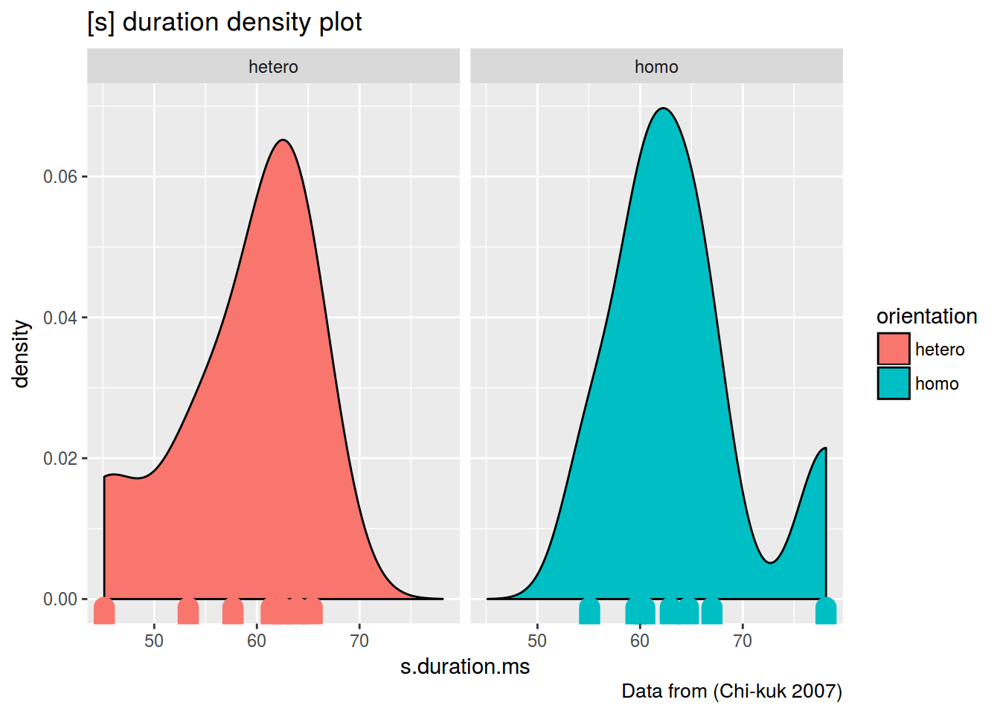

install.packages("tidyverse")library(tidyverse)
homo <- read.csv("http://goo.gl/Zjr9aF")
homo %>%
group_by(orientation) %>%
summarise(mean = mean(s.duration.ms),
CI = 1.96*sd(s.duration.ms)/sqrt(length(s.duration.ms)))## # A tibble: 2 × 3
## orientation mean CI
## <fctr> <dbl> <dbl>
## 1 hetero 58.46571 5.299922
## 2 homo 63.98286 5.421385homo %>%
group_by(orientation) %>%
summarise(mean = mean(s.duration.ms),
CI = 1.96*sd(s.duration.ms)/sqrt(length(s.duration.ms))) %>%
ggplot(aes(orientation, mean))+
geom_point()+
geom_errorbar(aes(ymin= mean-CI,
ymax = mean+CI), width = 0.3)+
labs(title = "Mean [s] duration with 95% confidence interval",
caption = "Data from (Chi-kuk 2007)")library(tidyverse)
iris %>%
ggplot(aes(x = Sepal.Length, y = Sepal.Width, color = Species))+
geom_point(size = 5)+
facet_wrap(~Species)homo %>%
ggplot(aes(s.duration.ms, fill = orientation)) +
geom_density()+
geom_rug()+
facet_wrap(~orientation)+
labs(title = "[s] duration density plot",
caption = "Data from (Chi-kuk 2007)")homo %>%
ggplot(aes(s.duration.ms, fill = orientation)) +
geom_density()+
geom_rug(aes(color = orientation), size = 5)+
facet_wrap(~orientation)+
labs(title = "[s] duration density plot",
caption = "Data from (Chi-kuk 2007)")
t.test(s.duration.ms~orientation, data = homo)##
## Welch Two Sample t-test
##
## data: s.duration.ms by orientation
## t = -1.4263, df = 11.994, p-value = 0.1793
## alternative hypothesis: true difference in means is not equal to 0
## 95 percent confidence interval:
## -13.945621 2.911336
## sample estimates:
## mean in group hetero mean in group homo
## 58.46571 63.98286p-value < 0.05…
xkcd If all else fails, use “significant at p > 0.05 level”; and hope no one notices
df <- read.csv("http://goo.gl/TRRx9Y")
df[df$name == "russian", 2]## [1] 267.8670 232.8380 243.4084 225.5630 287.5199 266.7282 292.5137
## [8] 294.1029 257.6401 232.2932 228.4824 261.8669 246.7714 272.9506
## [15] 220.8743 263.0739 243.9390 284.6122 278.2729 286.2970t.test(df[df$name == "russian", 2], mu = 240)##
## One Sample t-test
##
## data: df[df$name == "russian", 2]
## t = 3.6323, df = 19, p-value = 0.001773
## alternative hypothesis: true mean is not equal to 240
## 95 percent confidence interval:
## 248.2132 270.5483
## sample estimates:
## mean of x
## 259.3808df <- read.csv("http://goo.gl/MNkVws", sep="\t")
t.test(df$LI.Front, df$LI.Temp, paired = TRUE)##
## Paired t-test
##
## data: df$LI.Front and df$LI.Temp
## t = 2.8581, df = 11, p-value = 0.01557
## alternative hypothesis: true difference in means is not equal to 0
## 95 percent confidence interval:
## 0.07855312 0.60478021
## sample estimates:
## mean of the differences
## 0.3416667